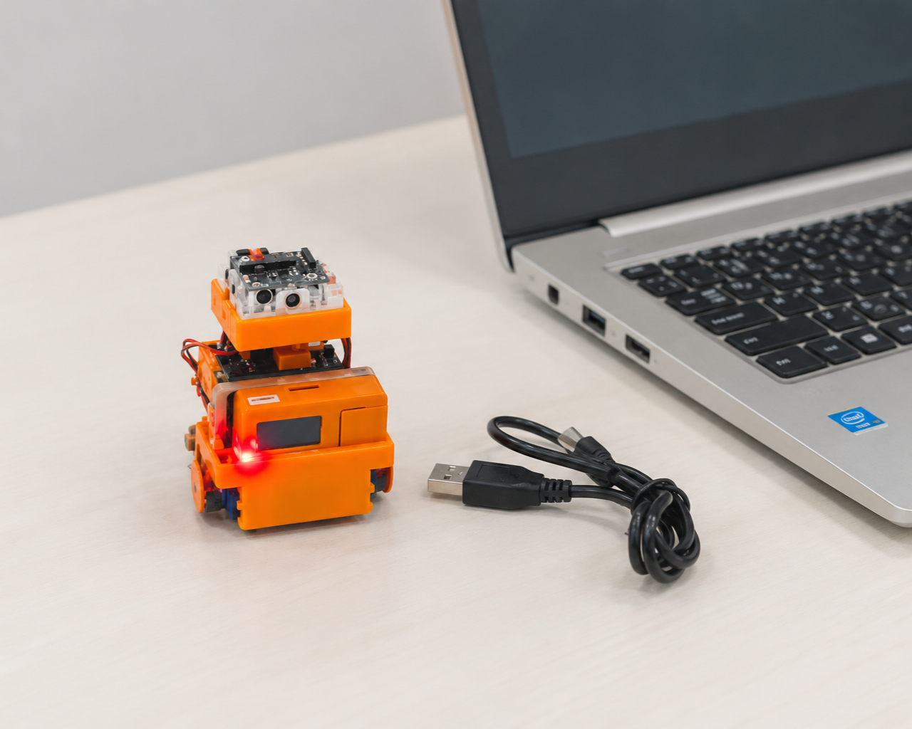
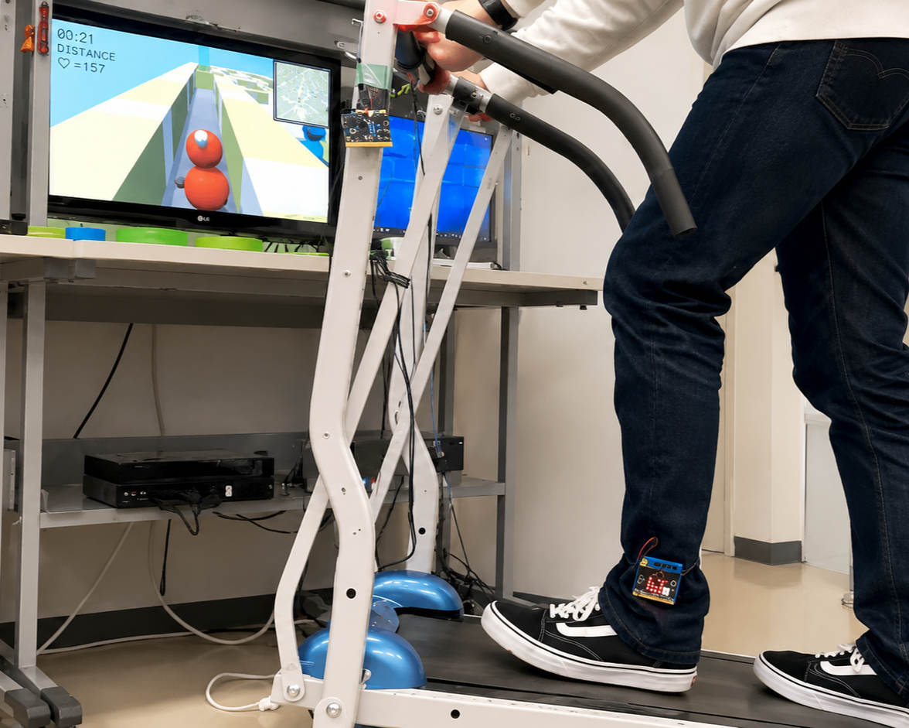
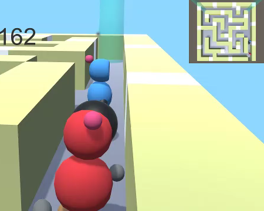
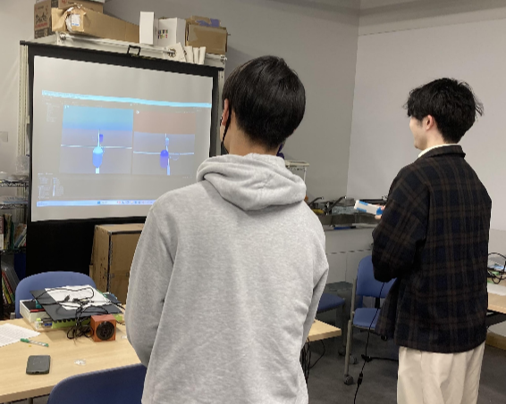
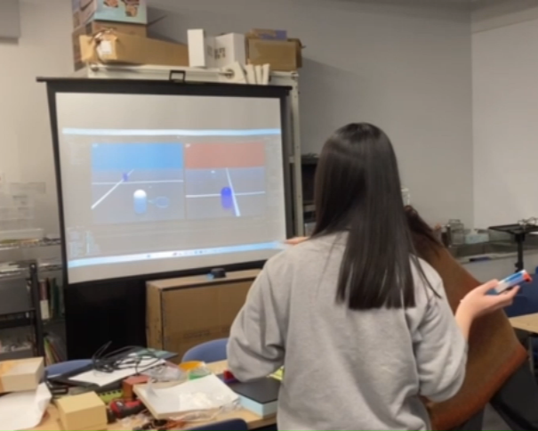
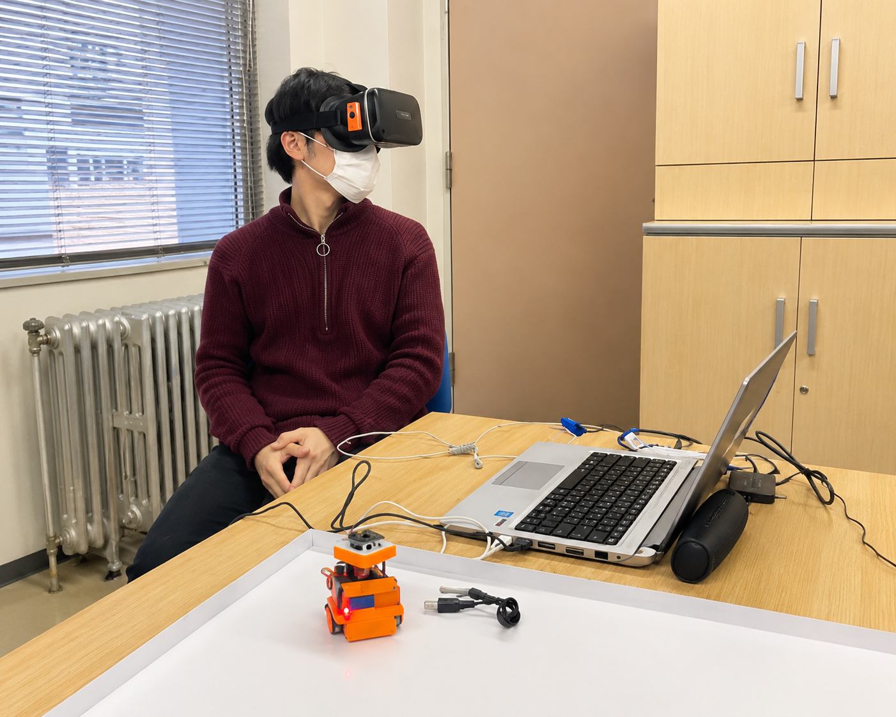
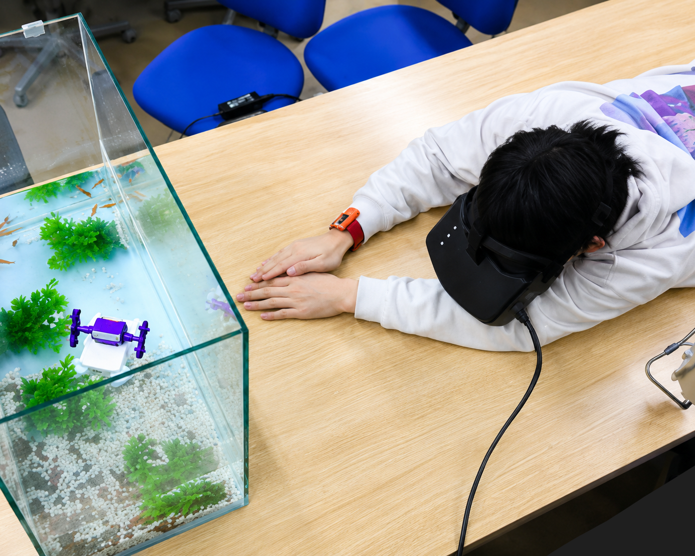
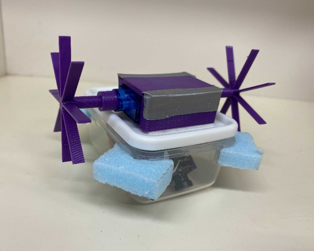

体を動かすシステム
Body System

研究事例
家庭用運動器具を用いた運動不足解消支援システム


家庭には、購入したもののほとんど使われずに放置されている運動器具が少なからず存在します。私たちはそのような器具を有効活用する方法として、ゲームと組み合わせて使用することを試みました。本研究では、運動器具を操作することでゲームが進行する仕組みを構築し、楽しみながら運動できる環境を目指しました。また、運動の強度が適切かどうかをセンサーで計測しながら、より効果的なゲーム設計を行っています。これにより、放置されがちな家庭用運動器具を、継続的に使いたくなるインタラクティブな運動体験へと変えることを目指しました。
エクサゲームが認知機能にもたらす効果について


近年、短時間の軽度な運動でも認知機能が向上するという研究報告が注目されています。さらに、複数のプレイヤーが協力しながら行う運動では、その効果がより高まるという知見も示されています。では、テレビゲーム性を取り入れた運動でも、同様の認知機能向上が期待できるのでしょうか？本研究では、簡単なエクサゲームを実際に開発・実装し、プレイ中の認知機能の変化を計測することで、その効果を検証しています。ゲームの設計には、楽しさや協調性を重視しつつ、運動強度や反応時間、運動前後の気分などの指標も取り入れ、運動と認知の相互作用を定量的に評価することを試みています。
日常を非日常に変えて楽しむためのロボット1

私たちは日常の中で、ふとした瞬間に「非日常」を楽しむことがあります。旅行やイベントのような特別な体験はもちろん、視点を変えるだけで、いつもの風景も新鮮に感じられることがあります。小型ロボットの目線で眺めると、見慣れた庭がジャングルに、水槽の中が広大な海に感じられるかもしれません。そこでゴーグル＋手足の加速度センサで小型ロボットを動かすシステムを試作してみました。
日常を非日常に変えて楽しむためのロボット2


私たちは日常の中で、ふとした瞬間に「非日常」を楽しむことがあります。旅行やイベントのような特別な体験はもちろん、視点を変えるだけで、いつもの風景も新鮮に感じられることがあります。小型ロボットの目線で眺めると、見慣れた庭がジャングルに、水槽の中が広大な海に感じられるかもしれません。そこでゴーグル＋手足の加速度センサで小型ロボットを動かすシステムを試作してみました。